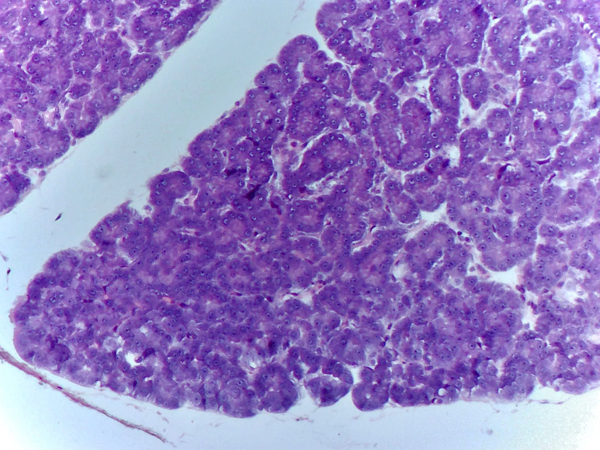
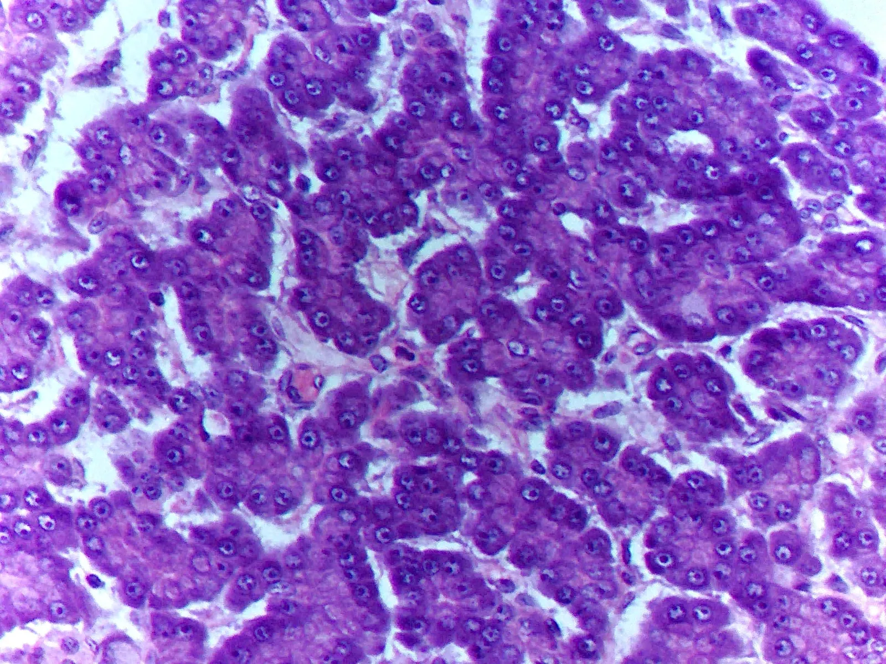

Lâmina 57 · A classificar
Lâmina 57


Toque na imagem para ampliar. No computador, use as setas do teclado para trocar de imagem.
Lâmina 57 · A classificar


Toque na imagem para ampliar. No computador, use as setas do teclado para trocar de imagem.